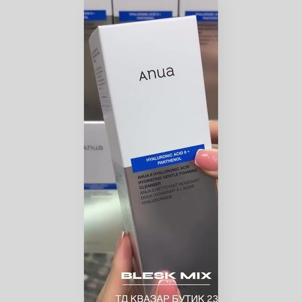

Anua · Корея
8 Hyaluronic Acid Hydrating Gentle Foaming Cleanser
Пенка для умывания · 150 мл
Скажи: пенка с 8 видами гиалуроновой кислоты, густо пенится и не стягивает кожу.
Предложи в пару тонер Anua PDRN Hyaluron.
Главное: Гиалуроновая кислота 8 видов, увлажняет кожу при умывании, чтобы после не стягивало
Не подойдёт: по полному составу строгих ограничений нет.
Подробнее о средстве
Кому подойдёт. Сухой, нормальной и обезвоженной коже, а также чувствительной, которой не подходят пенки с ощущением стянутости после умывания. Для ежедневного умывания утром и вечером.
Для чего. Мягкая пенка для умывания: очищает и не сушит кожу.
Чем отличается. Пенка с 8 видами гиалуроновой кислоты и пантенолом, густая пена, на утро и вечер.
Описание. Мягкая пенка для ежедневного умывания с густой пеной. Моющая основа на кокосовых ПАВах снимает загрязнения, а гиалуроновая кислота и пантенол оставляют коже комфорт после смывания.
Активные компоненты
- Гиалуроновая кислота 8 видов. Набор молекул разного размера: одни удерживают воду на поверхности, другие работают глубже. Кожа меньше теряет влагу при умывании.
- Пантенол. Витамин B5 смягчает и успокаивает кожу, снижает ощущение сухости после воды.
- Цинк PCA. Регулирует выработку кожного сала и мягко очищает поры, поэтому пенка не делает кожу жирной или пересушенной.
- Бетаин. Увлажнитель из сахарной свёклы, смягчает кожу и снижает раздражение от ПАВ.
- Мягкие ПАВ на основе кокоса. Дают пену и смывают загрязнения. Такая основа мягче сульфатов и меньше разрушает защитный слой кожи.
Результат. Кожа чистая, без чувства стянутости после умывания.
Как применять. Вспенить в ладонях с водой, помассировать по влажной коже 30–60 секунд, смыть. Утром и вечером.
Совет. Хорошо идёт перед тонером-бустером Anua PDRN Hyaluron 100 для усиленного увлажнения.